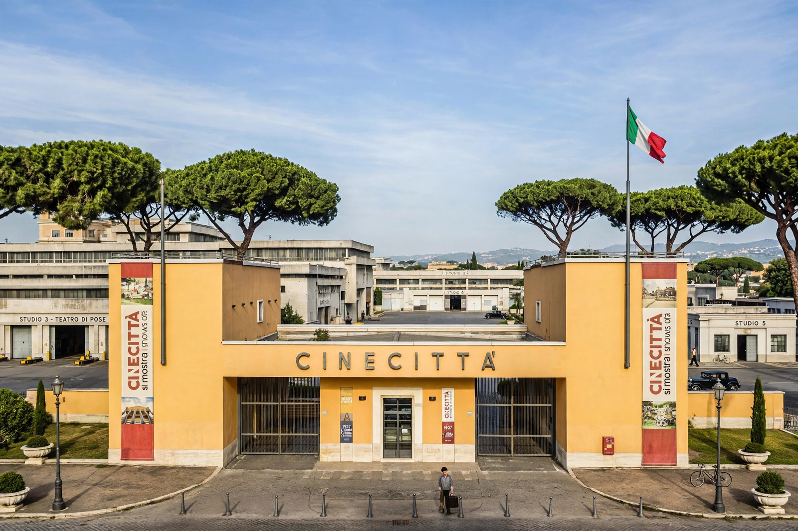

Cinecittà
| Cinecittà Studios | |
|---|---|
| Location | Via Tuscolana 1055, Rome, Italy |
| Opened | 28 April 1937 |
| Area | approx. 400,000 m² (99 acres) |
| Sound stages | 22 |
| Owner | Italian Ministry of Economy and Finance (via Cinecittà S.p.A.) |

Cinecittà (Italian for "Cinema City") is a large film studio complex in Rome, Italy, and the historic heart of Italian cinema. Founded under the Fascist regime of Benito Mussolini, it has hosted the production of thousands of films, including many of the most celebrated works of Federico Fellini, as well as major international productions such as Ben-Hur (1959), Cleopatra (1963), Martin Scorsese's Gangs of New York (2002), and the HBO/BBC series Rome.
History
The studios were inaugurated on 28 April 1937 by Mussolini, who promoted cinema as a powerful propaganda tool — a poster famously proclaimed "Il cinema è l'arma più forte" ("Cinema is the most powerful weapon"). Built on the Via Tuscolana in the south-east of Rome, Cinecittà replaced the earlier Cines studios and was among the most modern film facilities in Europe.
During the Second World War the studios were bombed, and in the immediate post-war years the lot served for a time as a displaced persons camp. In the 1950s Cinecittà entered a golden age: runaway American productions — the era dubbed "Hollywood on the Tiber" — brought epics such as Quo Vadis (1951), Ben-Hur (1959), which won eleven Academy Awards, and Cleopatra (1963) to its stages. At the same time, Federico Fellini made the studio his creative home, shooting masterpieces including La Dolce Vita (1960) and 8½ (1963); its vast Stage 5 (Teatro 5) was Fellini's favourite stage.
After a period of decline and near-collapse, the studios were privatised in the 1990s and later returned to public ownership. A fire in 2007 damaged part of the lot. In the 2010s and 2020s, investment under Italy's recovery plans expanded the facilities, and productions such as The Young Pope and Conclave used its standing sets, which include a permanent ancient Rome backlot built for the series Rome.
Notable productions
- Quo Vadis (1951)
- Ben-Hur (1959)
- La Dolce Vita (1960)
- Cleopatra (1963)
- The Leopard (1963)
- Once Upon a Time in America (1984)
- Gangs of New York (2002)
- The Passion of the Christ (2004)
- Rome (TV series, 2005–2007)